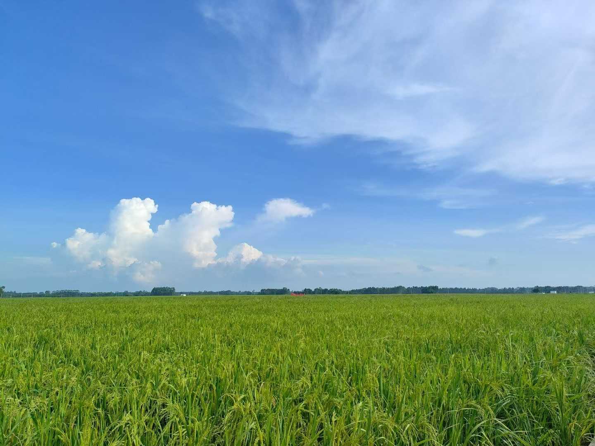

Essay · 2026 · 6 min read
"Il faut imaginer Sisyphe heureux."
— Albert Camus, The Myth of Sisyphus
A small answer to the largest question I keep asking, written beside a photograph of a rice field.
It was a clear July afternoon, two summers ago, and the wind was loud. I stood at the edge of a rice field that had just come into ear, and the clouds piled up slowly overhead, and the stalks bent low to the ground. I was not on my way anywhere. I was not waiting for anything to happen. And in that moment, without warning, I understood that this — exactly this — was the thing I had been alive to see.
Camus closed The Myth of Sisyphus with a single, immovable line: Il faut imaginer Sisyphe heureux. One must imagine Sisyphus happy.
Sisyphus, sentenced by the gods to roll a boulder up a hill and watch it come tumbling down forever, is the patron saint of every life that does not arrive. Camus asked the most naked question a philosopher can ask: if existence has no built-in meaning, is it still worth the trouble of being alive?
His answer was yes. Not because the stone would one day rest at the summit — it never would — but because the man pushing it could choose how to hold the labor in his mind. The meaning was never handed down by the gods. It was something Sisyphus made, with his hands and his attention, on the way up.
A long search
I have been searching for the meaning of my own life since I was fourteen, and I have not stopped. For a long time I believed the meaning was somewhere ahead of me — in a city I had not yet visited, in a grade I had not yet earned, in a person I had not yet met. I treated every now as a corridor leading to some brighter later, and I walked through my days the way you walk through a hallway, eyes fixed on the door at the end.
Slowly, almost without noticing, I came to suspect that I had it wrong. The meaning is not at the end. The end keeps retreating. Every door I opened revealed another hallway, and the hallway after that, until I began to feel that what I had taken for a destination was really just the shape of my own walking.
What I believe now is this: the meaning is in the experiencing. It lives in the things I have not yet done, in the beauty I have not yet seen, in the hours I have not yet been alive to.
What I mean by experience
I want to be careful with the word. Experience, as I mean it here, is not a checklist. It is not a souvenir. It is not the photograph posted to prove that the place was visited. It is something quieter, and more demanding — you actually went, you actually looked, you actually let the moment happen inside you, where no one else can see it.
In the summer of 2025 I flew north for the first time, to Shandong, and the great northern plain unrolled below the wing like a page being turned. A summer earlier — the field on this page, July of 2024 — I had stood among the grain and the wind, and a quieter version of the same lesson had arrived without anyone teaching it.
None of those hours produced anything. They did not go onto a résumé. They did not pay for dinner. And yet I am, in some small and unaccountable way, made of them. I know now how wide the sky can be, how clean the wind can be, how small a single person can be — and I know it not as a fact I have read but as a thing I have stood inside of.
Camus had his boulder. I have my list of things not yet seen, not yet attempted, not yet loved. Each one is a stone I am willing to push.
And so —
This is the answer I have today. I am writing it down not because I am certain, but because I want a version of myself to come back to in ten years and say, look, that was where you stood, that was what you thought, that was the field you were looking at when you tried to put it into words.
If you ask me what the meaning of life is, I will say: go and see, go and do, go and live through it. Walk to a field you have never walked to. Attempt the thing you are quite sure you cannot do. Love someone you did not expect to love. Pay attention until paying attention becomes its own reward.
The meaning will not wait for you. But it will meet you, every time, the moment you look up at the sky.
One must imagine Sisyphus happy.
And one must imagine every one of us — pushing our own stones, up our own hills — happy, too.